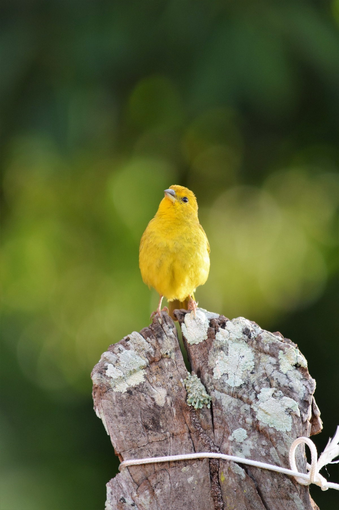

Canario
El cantor más famoso del mundo animal.
Dificultad
Fácil
Vida
10–15 años
Tamaño
12–14 cm
Alimentación
La dieta del canario se basa en semillas, complementada con frutas, verduras y ocasionalmente huevo duro para aportar proteína y calcio.
- check Mezcla de semillas para canario: mijo, alpiste, linaza
- check Verduras frescas 3 veces por semana: espinaca, zanahoria, brócoli
- check Fruta ocasional: manzana, naranja sin semillas
- check Huevo duro molido 1 vez por semana para calcio
Hábitat
Los canarios vuelan en horizontal, no en vertical, por eso necesitan jaulas rectangulares alargadas. La luz natural y la temperatura estable son clave para su canto.
- check Jaula rectangular mínima 60×40×40 cm (vuelan horizontal)
- check Temperatura 15–25°C y luz natural 12 horas al día
- check Perchas de distintos grosores para ejercitar los pies
- check Baño de agua tibia disponible 2–3 veces por semana
Salud
El canto del macho es el mejor indicador de salud. Si deja de cantar, algo no está bien. La muda anual de plumas es completamente normal.
- check Solo los machos cantan — si deja de cantar es señal de estrés o enfermedad
- check Muda de plumas anual (julio–septiembre) es completamente normal
- check Uñas largas necesitan recorte con especialista
- check Observa el pico y las fosas nasales regularmente
Dato curioso
Los canarios fueron los primeros en detectar gas en las minas de carbón. Los mineros los llevaban como "alarmas vivientes" porque son muy sensibles a gases tóxicos.
¿Tienes un canario?
Encuentra alimentos y accesorios especializados en nuestra tienda.
Ver productos →